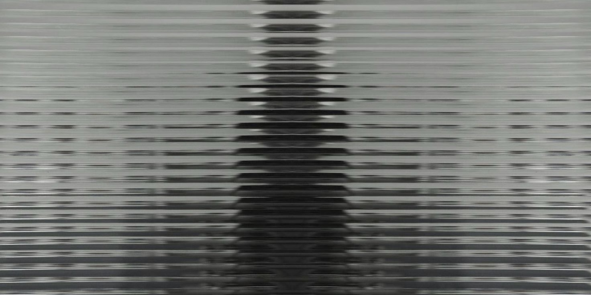
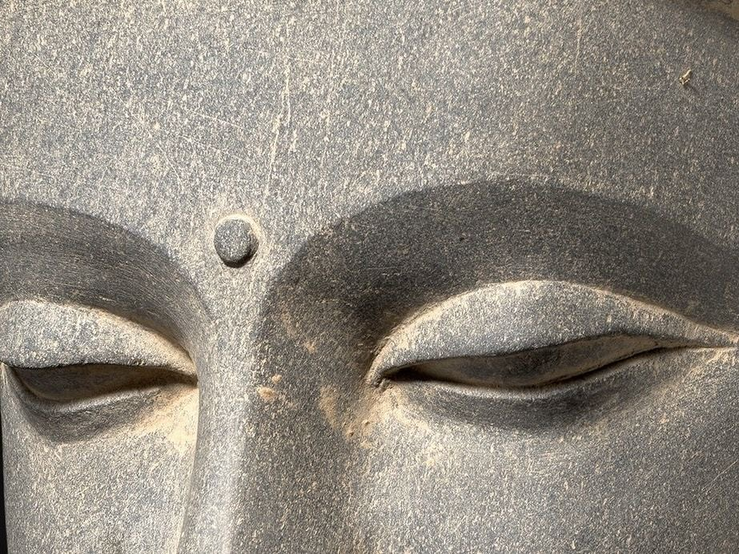

Haute Mess — это архив моды, которую не поняли или не приняли. Платформа, посвящённая модным коллекциям, которые в момент своего появления вызвали скандал, были осмеяны и названы безвкусицей. Лишь для того, чтобы годы спустя их идеи украли, упростили и выдали за «новый» тренд.
Мы не просто каталогизируем скандалы — мы проводим реабилитацию. Показываем, как эти «провалы» на десятилетия определили вектор развития всей индустрии. Через глубокий анализ, исторический контекст и, да, здоровую дозу иронии над слепотой современников.
Это пространство для тех, кто сомневается в официальной истории моды. Для ценителей, способных разглядеть гений в хаосе. Для тех, кто знает, что настоящее признание приходит с опозданием. Иногда — на целую эпоху.
Наша миссия — сократить это ожидание и восстановить связь между бунтом и его наследием.

Этот архив был бы невозможен без смелости дизайнеров-визионеров, которые пошли ва-банк и проиграли. По всем меркам своего времени.
Мы в долгу перед историками моды и критиками, которые ошиблись — ваши разгромные рецензии стали для нас бесценными историческими материалами.
И, конечно, отдельная благодарность индустрии, которая всё украла — без вашего позднего «озарения» этот архив потерял бы половину смысла.
Но главная благодарность — Вам. За то, что сомневаетесь в официальной версии истории и видите гений там, где другие видели провал.
Haute Mess.